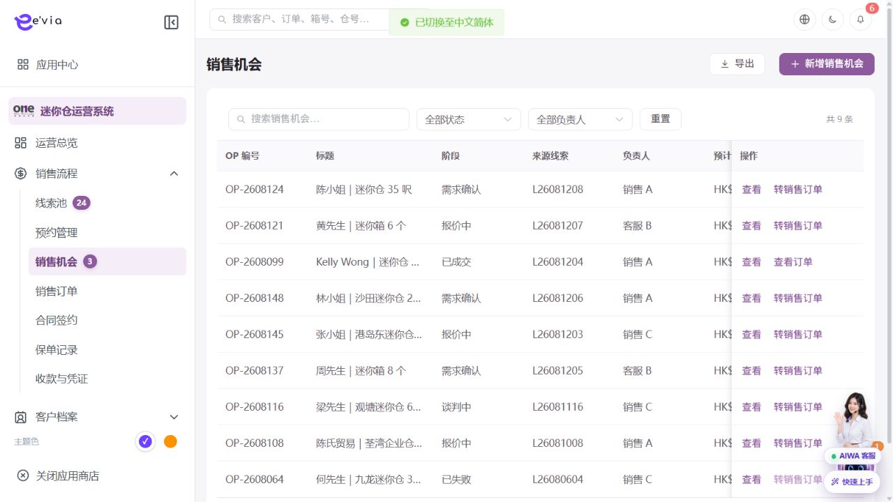
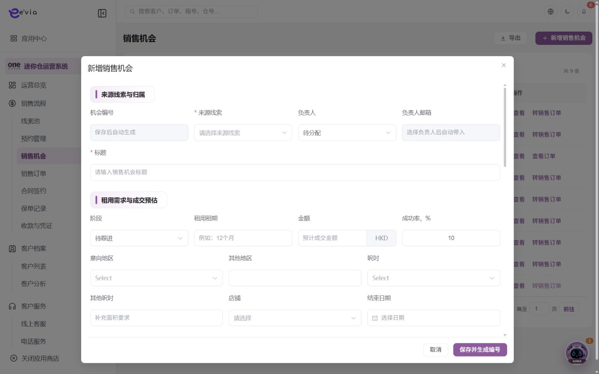
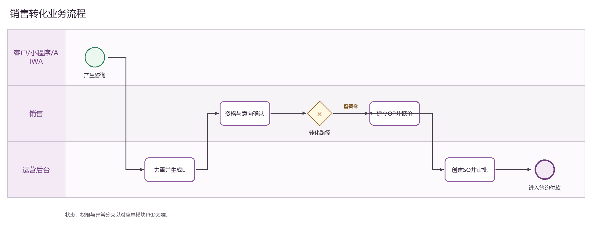

销售机会 PRD
下载 Word 文档销售机会 PRD
运营后台研发详细需求规格 · V2.5 · 2026-09-09
1 文档目标与范围
管理已确认需求的销售阶段、报价、预计金额和成交推进，并作为创建销售订单的唯一销售入口。 本文档明确页面字段、操作流程、业务规则、跨端契约、权限和验收条件。
| 属性 | 内容 |
|---|---|
| 文档编号 | OS-OPS-PRD-04 |
| 产品基线 | AiwaBot产品原型 V3.2 与 OneStorage运营后台原型 V1.1 |
| 版本 | V2.5 2026-09-09 |
1.1 原型界面依据
本模块界面直接取自 AiwaBot产品原型-v3.2.html。真实截图及功能点对应说明见“界面与功能对应说明”。
2 界面与页面结构
2.1 界面与功能对应说明
以下真实原型截图用于确定页面区域、入口和交互位置；字段校验、状态变化和服务端处理以本PRD功能规格为准。

| 说明项 | 界面辅助说明 |
|---|---|
| 对应功能点 | OS-OPS-PRD-04-FP02 更新阶段；OS-OPS-PRD-04-FP03 维护报价；OS-OPS-PRD-04-FP04 转销售订单；OS-OPS-PRD-04-FP05 关闭机会 |
| 页面区域 | 销售机会列表与阶段管理由查询条件、结果列表、状态标识、行级操作和分页区组成。 |
| 交互要求 | 查询条件可组合、重置并在返回时保留；列表与导出共用同一数据范围；按钮依据权限、状态和allowedActions显示。 |
| 状态与权限 | 动作由allowedActions控制；无权限隐藏入口，接口仍执行403校验并记录审计。 |

| 说明项 | 界面辅助说明 |
|---|---|
| 对应功能点 | OS-OPS-PRD-04-FP01 新增销售机会 |
| 页面区域 | 新增界面按业务分组展示表单字段、关联对象选择、保存与取消操作。 |
| 交互要求 | 必填和格式错误在字段下方提示；关联对象实时校验；保存期间按钮防重复，关闭已修改表单需二次确认。 |
| 状态与权限 | 动作由allowedActions控制；无权限隐藏入口，接口仍执行403校验并记录审计。 |
2.3 筛选条件
| 筛选项 | 规则 |
|---|---|
| OP编号、客户或标题 | 支持组合查询、重置和返回保留。 |
| 阶段 | 支持组合查询、重置和返回保留。 |
| 状态 | 支持组合查询、重置和返回保留。 |
| 来源渠道 | 支持组合查询、重置和返回保留。 |
| 负责人 | 支持组合查询、重置和返回保留。 |
| 团队 | 支持组合查询、重置和返回保留。 |
| 预计成交日期 | 支持组合查询、重置和返回保留。 |
3 列表字段规格
>| 字段ID | 字段 | 来源 | 展示与交互规则 |
|---|---|---|---|
| OS-OPS-PRD-04-L01 | OP 编号 | 服务端主键或业务编号 | 完整展示并支持复制；唯一且不可使用展示名称代替。 |
| OS-OPS-PRD-04-L02 | 标题 | 业务主域 | 详情与导出保持一致；空值显示—，不使用模拟值补齐。 |
| OS-OPS-PRD-04-L03 | 阶段 | 服务端枚举 | 以标签显示；筛选、导出和详情使用同一枚举文案。 |
| OS-OPS-PRD-04-L04 | 来源线索 | 业务主域 | 详情与导出保持一致；空值显示—，不使用模拟值补齐。 |
| OS-OPS-PRD-04-L05 | 负责人 | 服务端/关联主数据 | 显示姓名，离职或停用账号保留历史名称。 |
| OS-OPS-PRD-04-L06 | 预计金额 | 财务或报价主域 | 显示币种和两位小数；不得用格式化字符串参与计算。 |
| OS-OPS-PRD-04-L07 | 状态 | 服务端/关联主数据 | 以标签显示服务端枚举；不可由前端自行推导。 |
| OS-OPS-PRD-04-L08 | 新增时间 | 服务端时间 | 按Asia/Hong_Kong显示；空值显示—，排序使用原始时间。 |
| OS-OPS-PRD-04-L09 | 操作 | 服务端/关联主数据 | 根据allowedActions显示查看、编辑及状态动作；后端再次鉴权。 |
4 新增与编辑表单
| 字段ID | 字段 | 控件 | 必填 | 校验与保存规则 |
|---|---|---|---|---|
| OS-OPS-PRD-04-F01 | 机会编号 | 只读或检索选择 | 系统生成/必填 | 新增时由服务端生成；关联编号必须存在且在数据范围内。 |
| OS-OPS-PRD-04-F02 | 来源线索 | 文本框 | 条件必填 | 去除首尾空格；保存原始值与标准化值。 |
| OS-OPS-PRD-04-F03 | 负责人 | 单选或下拉选择 | 必填 | 选项来自服务端字典；提交编码值，界面显示名称。 |
| OS-OPS-PRD-04-F04 | 负责人邮箱 | 单选或下拉选择 | 必填 | 选项来自服务端字典；提交编码值，界面显示名称。 |
| OS-OPS-PRD-04-F05 | 标题 | 文本框 | 条件必填 | 去除首尾空格；保存原始值与标准化值。 |
| OS-OPS-PRD-04-F06 | 阶段 | 单选或下拉选择 | 必填 | 选项来自服务端字典；提交编码值，界面显示名称。 |
| OS-OPS-PRD-04-F07 | 租用租期 | 数字输入 | 条件必填 | 仅允许业务配置范围内的整数；服务端再次校验。 |
| OS-OPS-PRD-04-F08 | 金额 | 金额输入 | 条件必填 | 输入大于等于0，最多两位小数；服务端以最小货币单位重算。 |
| OS-OPS-PRD-04-F09 | 成功率 | 数字输入 | 条件必填 | 仅允许业务配置范围内的整数；服务端再次校验。 |
| OS-OPS-PRD-04-F10 | 意向地区 | 单选或下拉选择 | 必填 | 选项来自服务端字典；提交编码值，界面显示名称。 |
| OS-OPS-PRD-04-F11 | 其他地区 | 单选或下拉选择 | 必填 | 选项来自服务端字典；提交编码值，界面显示名称。 |
| OS-OPS-PRD-04-F12 | 呎吋 | 数字输入 | 条件必填 | 输入期望面积，必须大于0；单位固定为平方呎并随请求保存。 |
| OS-OPS-PRD-04-F13 | 其他呎吋 | 数字输入 | 选择其他面积时必填 | 必须大于0并在产品支持范围内。 |
| OS-OPS-PRD-04-F14 | 店铺 | 单选或下拉选择 | 必填 | 选项来自服务端字典；提交编码值，界面显示名称。 |
| OS-OPS-PRD-04-F15 | 结束日期 | 日期或日期时间 | 必填 | 服务端校验起止顺序、营业日和截止规则。 |
| OS-OPS-PRD-04-F16 | 客户总档 | 文本框 | 条件必填 | 去除首尾空格；保存原始值与标准化值。 |
| OS-OPS-PRD-04-F17 | 流动电话 | 电话号码输入 | 必填 | 香港号码按8位校验；与区号组合查重并保存E.164标准值。 |
| OS-OPS-PRD-04-F18 | 介绍人推荐码 | 文本输入 | 选填 | 统一转大写校验；不得自荐，绑定成功后不可直接覆盖。 |
| OS-OPS-PRD-04-F19 | 客户号码 | 文本框 | 条件必填 | 去除首尾空格；保存原始值与标准化值。 |
| OS-OPS-PRD-04-F20 | Credit Ref | 文本框 | 条件必填 | 去除首尾空格；保存原始值与标准化值。 |
| OS-OPS-PRD-04-F21 | 香港身份证名称 | 文本框 | 条件必填 | 去除首尾空格；保存原始值与标准化值。 |
| OS-OPS-PRD-04-F22 | 地址 | 多行文本 | 条件必填 | 最多500字；拒绝或异常原因不得只输入空白。 |
| OS-OPS-PRD-04-F23 | 地区 | 单选或下拉选择 | 必填 | 选项来自服务端字典；提交编码值，界面显示名称。 |
| OS-OPS-PRD-04-F24 | 分区 | 文本框 | 条件必填 | 去除首尾空格；保存原始值与标准化值。 |
| OS-OPS-PRD-04-F25 | 邮递区号 | 文本框 | 条件必填 | 去除首尾空格；保存原始值与标准化值。 |
| OS-OPS-PRD-04-F26 | 国家 | 单选或下拉选择 | 必填 | 选项来自服务端字典；提交编码值，界面显示名称。 |
| OS-OPS-PRD-04-F27 | 线索来源 | 文本框 | 条件必填 | 去除首尾空格；保存原始值与标准化值。 |
| OS-OPS-PRD-04-F28 | 线索活动 | 文本框 | 条件必填 | 去除首尾空格；保存原始值与标准化值。 |
| OS-OPS-PRD-04-F29 | 来源渠道 | 单选或下拉选择 | 必填 | 选项来自服务端字典；提交编码值，界面显示名称。 |
| OS-OPS-PRD-04-F30 | 线索退回原因 | 多行文本 | 条件必填 | 最多500字；拒绝或异常原因不得只输入空白。 |
| OS-OPS-PRD-04-F31 | 客户需求 | 文本框 | 条件必填 | 去除首尾空格；保存原始值与标准化值。 |
| OS-OPS-PRD-04-F32 | 线索沟通摘要 | 多行文本 | 条件必填 | 最多500字；拒绝或异常原因不得只输入空白。 |
| OS-OPS-PRD-04-F33 | 内部备注 | 多行文本 | 条件必填 | 最多500字；拒绝或异常原因不得只输入空白。 |
| OS-OPS-PRD-04-F34 | 转仓备注 | 多行文本 | 条件必填 | 最多500字；拒绝或异常原因不得只输入空白。 |
| OS-OPS-PRD-04-F35 | 营销活动 | 文本框 | 条件必填 | 去除首尾空格；保存原始值与标准化值。 |
| OS-OPS-PRD-04-F36 | 推荐计划 | 单选或下拉选择 | 必填 | 选项来自服务端字典；提交编码值，界面显示名称。 |
4.1 详情入口与页面容器
从列表查看入口、业务编号链接或关联对象深链打开详情。界面依据原型真实截图“销售机会列表与阶段管理”；原型没有独立详情画面时不使用示例图，按现有列表视觉体系实现。
| 界面状态 | 完整处理规则 |
|---|---|
| 打开与返回 | 保存列表筛选、分页、排序和滚动位置，返回后仅刷新变化行 |
| 加载中 | 显示业务编号与骨架，禁止闪现上一条记录 |
| 加载成功 | 返回id、version、状态、asOfTime、fieldPermissions和allowedActions |
| 不存在或无权限 | 不泄露敏感信息，提供返回入口并记录拒绝审计 |
| 版本变化 | 自动刷新只读区，存在未提交操作时提示比较 |
| 部分失败 | 保留成功信息组，失败组显示traceId和重试 |
4.2 顶部摘要与信息组
详情覆盖新增、编辑以及系统处理后形成的有效字段，不得只复制列表列。
| 信息组 | 展示字段 | 展示与交互规则 |
|---|---|---|
| 标识与基本资料 | OP 编号、标题、成功率、意向地区、其他地区、流动电话、Credit Ref、香港身份证名称、地区、分区、邮递区号、国家 | 完整显示业务编号与主属性；编号支持复制且不可编辑，敏感字段按字段权限脱敏。 |
| 归属与关联对象 | 来源线索、负责人、机会编号、负责人邮箱、店铺、客户总档、介绍人推荐码、客户号码、线索来源、线索活动、来源渠道、线索退回原因、客户需求、线索沟通摘要、营销活动、推荐计划 | 显示名称加业务编号；有查看权限时可打开关联对象，无权限时只显示允许的摘要。 |
| 金额数量与业务配置 | 预计金额、租用租期、金额、呎吋、其他呎吋 | 显示原始值、单位、币种和有效版本；金额与数量由服务端返回，前端不得二次推导覆盖。 |
| 状态责任与时间 | 阶段、状态、新增时间、结束日期 | 显示当前状态、负责人、业务时间和服务器更新时间；状态由服务端枚举与时间线共同解释。 |
| 附件说明与补充信息 | 地址、内部备注、转仓备注 | 附件展示文件名、版本、扫描状态和权限动作；长文本保留换行并记录创建人与时间。 |
| 系统与审计信息 | version、createdAt、createdBy、updatedAt、updatedBy、sourceChannel、requestId | 作为详情响应固定字段；用于并发控制、来源说明和操作追踪，不允许前端伪造。 |
4.3 状态时间线与处理记录
| 区域 | 内容 | 规则 |
|---|---|---|
| 当前状态 | 资格确认→需求分析→方案报价→商务确认→赢单/输单/取消 | 由服务端返回，不由前端推断 |
| 状态时间线 | 创建、审批、执行、完成、取消、失败和恢复节点 | 显示eventId、操作者、来源端、业务时间、接收时间、原因和结果 |
| 操作记录 | 字段变更、状态动作、下载导出和权限拒绝 | 倒序分页并对敏感值脱敏 |
| 异步任务 | 通知、同步、文件、第三方、导出或补偿 | 显示任务编号、状态、重试次数和最近错误 |
4.4 关联对象与页签
| 页签 | 范围 | 规则 |
|---|---|---|
| 基本资料 | 当前对象全部有效字段 | 按fieldPermissions显示、脱敏或隐藏 |
| 关联业务 | 来源线索、客户、报价版本、审批、销售订单、营销活动、推荐计划与跟进记录 | 按权限分页并提供目标detailUrl |
| 附件凭证 | 当前对象及处理过程文件 | 显示版本、扫描、哈希与可用动作 |
| 处理记录 | 时间线、日志与异步任务 | 按类型筛选并使用香港时区 |
4.5 详情动作与状态控制
| 动作ID | 动作 | 角色 | 前置条件 | 成功及刷新规则 |
|---|---|---|---|---|
| OS-OPS-PRD-04-DA01 | 新增销售机会 | 具备本模块创建权限的运营人员 | 用户登录有效并具备创建或批量权限；关联主数据有效且属于dataScope；页面已加载最新字典、业务配置和allowedActions。 | 必须选择来源线索或说明人工创建来源；继承可追溯字段并生成OP编号。 成功后刷新version、状态、时间线、关联数量和allowedActions；失败不得提前改变界面主状态。 |
| OS-OPS-PRD-04-DA02 | 更新阶段 | 当前对象负责人、被分派执行人或获授权管理员 | 用户登录有效；目标对象存在且属于用户dataScope；当前状态包含该动作；页面持有最新version和allowedActions。涉及金额、库存、附件或第三方结果时必须回源确认。 | 阶段前进需满足必填条件；回退必须填写原因。 成功后刷新version、状态、时间线、关联数量和allowedActions；失败不得提前改变界面主状态。 |
| OS-OPS-PRD-04-DA03 | 维护报价 | 运营管理员或该配置项负责人 | 用户登录有效；目标对象存在且属于用户dataScope；当前状态包含该动作；页面持有最新version和allowedActions。涉及金额、库存、附件或第三方结果时必须回源确认。 | 保存价格、折扣、有效期和报价版本，旧版本只读。 成功后刷新version、状态、时间线、关联数量和allowedActions；失败不得提前改变界面主状态。 |
| OS-OPS-PRD-04-DA04 | 转销售订单 | 当前对象负责人、被分派执行人或获授权管理员 | 用户登录有效；目标对象存在且属于用户dataScope；当前状态包含该动作；页面持有最新version和allowedActions。涉及金额、库存、附件或第三方结果时必须回源确认。 | 仅方案报价或商务确认阶段可执行，校验客户、产品、库存、金额和审批。 成功后刷新version、状态、时间线、关联数量和allowedActions；失败不得提前改变界面主状态。 |
| OS-OPS-PRD-04-DA05 | 关闭机会 | 对象负责人或具备状态管理权限的管理员 | 用户登录有效；目标对象存在且属于用户dataScope；当前状态包含该动作；页面持有最新version和allowedActions。涉及金额、库存、附件或第三方结果时必须回源确认。 | 选择赢单、输单或取消原因；关闭后仅允许查看和重新开启审批。 成功后刷新version、状态、时间线、关联数量和allowedActions；失败不得提前改变界面主状态。 |
仅显示allowedActions返回的动作
高风险动作二次确认并展示影响
提交携带expectedVersion和clientRequestId
超时先查结果再重试
部分成功返回逐项结果和补偿入口
4.6 接口事件与验收
| 契约 | 路径或事件 | 要求 |
|---|---|---|
| 详情聚合 | GET /ops/v1/opportunities/{id} | 资料、状态、version、权限、动作与关联计数 |
| 状态时间线 | GET /ops/v1/opportunities/{id}/timeline | 不可覆盖的业务节点 |
| 关联对象 | GET /ops/v1/opportunities/{id}/relations | 目标对象权限与分页 |
| 操作记录 | GET /ops/v1/opportunities/{id}/activities | 变更、动作、任务与审计 |
| 业务动作 | POST /ops/v1/opportunities/{id}/actions/{actionCode} | 幂等和并发控制 |
| 变更事件 | 销售机会.DetailChanged.v1 | 按changedSections刷新 |
详情覆盖新增编辑与系统字段
状态时间线和动作使用同一version
权限在返回字段前生效
关联数量与明细一致
附件和下载有审计
并发冲突不覆盖输入
异步失败可追踪补偿
返回列表保留上下文
5 功能点详细设计
| 功能编号 | 功能点 | 目标 |
|---|---|---|
| OS-OPS-PRD-04-FP01 | 新增销售机会 | 必须选择来源线索或说明人工创建来源；继承可追溯字段并生成OP编号。 |
| OS-OPS-PRD-04-FP02 | 更新阶段 | 阶段前进需满足必填条件；回退必须填写原因。 |
| OS-OPS-PRD-04-FP03 | 维护报价 | 保存价格、折扣、有效期和报价版本，旧版本只读。 |
| OS-OPS-PRD-04-FP04 | 转销售订单 | 仅方案报价或商务确认阶段可执行，校验客户、产品、库存、金额和审批。 |
| OS-OPS-PRD-04-FP05 | 关闭机会 | 选择赢单、输单或取消原因；关闭后仅允许查看和重新开启审批。 |
5.1 新增销售机会
功能编号：OS-OPS-PRD-04-FP01
功能目的：必须选择来源线索或说明人工创建来源；继承可追溯字段并生成OP编号。
使用角色与入口：具备本模块创建权限的运营人员；从模块列表右上角新增入口或关联对象快捷入口进入。入口显示前校验菜单、动作和数据范围。
前置条件：用户登录有效并具备创建或批量权限；关联主数据有效且属于dataScope；页面已加载最新字典、业务配置和allowedActions。
界面操作：打开新增界面，按页面分组录入机会编号、来源线索、负责人、负责人邮箱、标题、阶段、租用租期、金额、成功率、意向地区、其他地区、呎吋；关联对象使用检索选择。点击保存前完成字段级和跨字段校验。
系统处理：服务端使用clientRequestId幂等校验，在事务内生成业务编号、主对象、初始状态和审计记录；事务提交后发布领域事件。必须选择来源线索或说明人工创建来源；继承可追溯字段并生成OP编号。
业务规则：一个线索可以产生多个不同业务机会，但同一业务和有效周期只允许一个开放机会；赢单必须关联销售订单。服务端必须重复校验。
成功结果：页面提示“新增销售机会成功”，刷新对象状态、version、allowedActions、关联对象和时间线；如产生异步任务，同时显示任务编号和进度入口。
异常与恢复：400保留输入；403拒绝并审计；409要求刷新；超时按clientRequestId查询；部分成功显示明细和补偿入口。
跨端影响：线索转机会后回写OP编号和转化状态；接收端打开后重新鉴权并回源。
验收条件：在允许状态下完成新增销售机会时仅产生一次预期数据变化和一次审计记录；越权、错误状态、重复提交及版本冲突均不得产生重复对象或越级状态。
5.2 更新阶段
功能编号：OS-OPS-PRD-04-FP02
功能目的：阶段前进需满足必填条件；回退必须填写原因。
使用角色与入口：当前对象负责人、被分派执行人或获授权管理员；从列表行操作、详情页主操作区或待办入口进入。入口显示前校验菜单、动作和数据范围。
前置条件：用户登录有效；目标对象存在且属于用户dataScope；当前状态包含该动作；页面持有最新version和allowedActions。涉及金额、库存、附件或第三方结果时必须回源确认。
界面操作：在详情页执行更新阶段，填写或核对机会编号、负责人、负责人邮箱、金额、店铺、结束日期、客户总档、客户号码、线索退回原因、客户需求；界面随步骤显示当前节点、下一步和可撤回条件。
系统处理：服务端调用POST /ops/v1/opportunities/{id}/actions/{action}，校验权限、当前状态、expectedVersion和业务不变量，在事务中写入状态及时间线。阶段前进需满足必填条件；回退必须填写原因。
业务规则：一个线索可以产生多个不同业务机会，但同一业务和有效周期只允许一个开放机会；金额使用HKD最小货币单位，成功率为0至100整数。服务端必须重复校验。
成功结果：页面提示“更新阶段成功”，刷新对象状态、version、allowedActions、关联对象和时间线；如产生异步任务，同时显示任务编号和进度入口。
异常与恢复：400保留输入；403拒绝并审计；409要求刷新；超时按clientRequestId查询；部分成功显示明细和补偿入口。
跨端影响：订单创建后客户小程序显示待签约或待支付状态；接收端打开后重新鉴权并回源。
验收条件：在允许状态下完成更新阶段时仅产生一次预期数据变化和一次审计记录；越权、错误状态、重复提交及版本冲突均不得产生重复对象或越级状态。
5.3 维护报价
功能编号：OS-OPS-PRD-04-FP03
功能目的：保存价格、折扣、有效期和报价版本，旧版本只读。
使用角色与入口：运营管理员或该配置项负责人；从列表右上角管理入口或详情页编辑入口进入。入口显示前校验菜单、动作和数据范围。
前置条件：用户登录有效；目标对象存在且属于用户dataScope；当前状态包含该动作；页面持有最新version和allowedActions。涉及金额、库存、附件或第三方结果时必须回源确认。
界面操作：打开编辑界面并显示当前version，维护机会编号、来源线索、负责人、负责人邮箱、标题、阶段、租用租期、金额、成功率、意向地区、其他地区、呎吋；受引用字段变更时展示影响对象，保存前确认生效范围。
系统处理：服务端以expectedVersion执行并发控制，校验引用关系和生效时间；保存新版本并记录变更前后值。保存价格、折扣、有效期和报价版本，旧版本只读。
业务规则：输单原因进入分析维度且不得覆盖历史报价。服务端必须重复校验。
成功结果：页面提示“维护报价成功”，刷新对象状态、version、allowedActions、关联对象和时间线；如产生异步任务，同时显示任务编号和进度入口。
异常与恢复：400保留输入；403拒绝并审计；409要求刷新；超时按clientRequestId查询；部分成功显示明细和补偿入口。
跨端影响：AIWA只能补充建议与摘要，不能自动批准折扣或关闭机会；接收端打开后重新鉴权并回源。
验收条件：在允许状态下完成维护报价时仅产生一次预期数据变化和一次审计记录；越权、错误状态、重复提交及版本冲突均不得产生重复对象或越级状态。
5.4 转销售订单
功能编号：OS-OPS-PRD-04-FP04
功能目的：仅方案报价或商务确认阶段可执行，校验客户、产品、库存、金额和审批。
使用角色与入口：当前对象负责人、被分派执行人或获授权管理员；从列表行操作、详情页主操作区或待办入口进入。入口显示前校验菜单、动作和数据范围。
前置条件：用户登录有效；目标对象存在且属于用户dataScope；当前状态包含该动作；页面持有最新version和allowedActions。涉及金额、库存、附件或第三方结果时必须回源确认。
界面操作：在详情页执行转销售订单，填写或核对机会编号、负责人、负责人邮箱、金额、店铺、结束日期、客户总档、客户号码、线索退回原因、客户需求；界面随步骤显示当前节点、下一步和可撤回条件。
系统处理：服务端调用POST /ops/v1/opportunities/{id}/actions/{action}，校验权限、当前状态、expectedVersion和业务不变量，在事务中写入状态及时间线。仅方案报价或商务确认阶段可执行，校验客户、产品、库存、金额和审批。
业务规则：赢单必须关联销售订单。服务端必须重复校验。
成功结果：页面提示“转销售订单成功”，刷新对象状态、version、allowedActions、关联对象和时间线；如产生异步任务，同时显示任务编号和进度入口。
异常与恢复：400保留输入；403拒绝并审计；409要求刷新；超时按clientRequestId查询；部分成功显示明细和补偿入口。
跨端影响：线索转机会后回写OP编号和转化状态；接收端打开后重新鉴权并回源。
验收条件：在允许状态下完成转销售订单时仅产生一次预期数据变化和一次审计记录；越权、错误状态、重复提交及版本冲突均不得产生重复对象或越级状态。
5.5 关闭机会
功能编号：OS-OPS-PRD-04-FP05
功能目的：选择赢单、输单或取消原因；关闭后仅允许查看和重新开启审批。
使用角色与入口：对象负责人或具备状态管理权限的管理员；从列表行操作或详情页状态动作区进入。入口显示前校验菜单、动作和数据范围。
前置条件：用户登录有效；目标对象存在且属于用户dataScope；当前状态包含该动作；页面持有最新version和allowedActions。涉及金额、库存、附件或第三方结果时必须回源确认。
界面操作：在详情或行操作中触发关闭机会，界面展示当前状态、目标状态、影响范围和原因；高风险动作二次确认。
系统处理：服务端调用POST /ops/v1/opportunities/{id}/actions/{action}，校验权限、当前状态、expectedVersion和业务不变量，在事务中写入状态及时间线。选择赢单、输单或取消原因；关闭后仅允许查看和重新开启审批。
业务规则：一个线索可以产生多个不同业务机会，但同一业务和有效周期只允许一个开放机会。服务端必须重复校验。
成功结果：页面提示“关闭机会成功”，刷新对象状态、version、allowedActions、关联对象和时间线；如产生异步任务，同时显示任务编号和进度入口。
异常与恢复：400保留输入；403拒绝并审计；409要求刷新；超时按clientRequestId查询；部分成功显示明细和补偿入口。
跨端影响：订单创建后客户小程序显示待签约或待支付状态；接收端打开后重新鉴权并回源。
验收条件：在允许状态下完成关闭机会时仅产生一次预期数据变化和一次审计记录；越权、错误状态、重复提交及版本冲突均不得产生重复对象或越级状态。
6 状态机与业务规则
| 对象 | 状态流转 |
|---|---|
| 销售机会 | 资格确认→需求分析→方案报价→商务确认→赢单/输单/取消 |
| 异步任务 | 待执行→执行中→成功/失败→重试/人工处理 |
| 规则ID | 业务规则 |
|---|---|
| OS-OPS-PRD-04-R01 | 一个线索可以产生多个不同业务机会，但同一业务和有效周期只允许一个开放机会 |
| OS-OPS-PRD-04-R02 | 金额使用HKD最小货币单位，成功率为0至100整数 |
| OS-OPS-PRD-04-R03 | 结束日期不得早于创建日期 |
| OS-OPS-PRD-04-R04 | 赢单必须关联销售订单 |
| OS-OPS-PRD-04-R05 | 输单原因进入分析维度且不得覆盖历史报价 |
| OS-OPS-PRD-04-R06 | 所有写请求携带clientRequestId和expectedVersion，重复请求返回首次结果 |
| OS-OPS-PRD-04-R07 | 服务端返回allowedActions，前端仅据此展示按钮，后端仍逐动作鉴权 |
| OS-OPS-PRD-04-R08 | 列表、详情、关联选择器、统计和导出使用同一数据范围 |
| OS-OPS-PRD-04-R09 | 创建、编辑、状态流转、导出、下载和审批均记录操作审计 |
| OS-OPS-PRD-04-R10 | 第三方调用失败不得伪装主业务成功，进入可重试或人工处理状态 |
7 BPMN流程

客户、后台、执行端和领域服务节点必须与状态机一致。
8 跨端交互规则
| 规则ID | 交互规则 |
|---|---|
| OS-OPS-PRD-04-X01 | 线索转机会后回写OP编号和转化状态 |
| OS-OPS-PRD-04-X02 | 订单创建后客户小程序显示待签约或待支付状态 |
| OS-OPS-PRD-04-X03 | AIWA只能补充建议与摘要，不能自动批准折扣或关闭机会 |
客户小程序仅访问本人数据，工单小程序仅访问本人或团队任务
深链打开后重新校验身份、权限和最新状态
金额、库存、状态和allowedActions必须回源
离线重试沿用同一clientRequestId
9 接口与事件契约
| 契约 | 路径或事件 | 要求 |
|---|---|---|
| 列表 | GET /ops/v1/opportunities | 分页、排序、筛选、数据范围和脱敏 |
| 详情 | GET /ops/v1/opportunities/{id} | version、关联对象、时间线和allowedActions |
| 新增 | POST /ops/v1/opportunities | clientRequestId幂等 |
| 编辑 | PATCH /ops/v1/opportunities/{id} | expectedVersion并发控制 |
| 动作 | POST /ops/v1/opportunities/{id}/actions/{action} | 动作级权限和状态前置 |
| 事件 | 销售机会.Changed.v1 | eventId、aggregateId、version和occurredAt |
10 异常与边界处理
| 场景 | 处理 |
|---|---|
| 400字段错误 | 字段级提示并保留输入 |
| 403无权限 | 拒绝并记录审计 |
| 404不存在 | 不泄露额外对象信息 |
| 409版本冲突 | 刷新后重新操作 |
| 重复请求 | 返回首次幂等结果 |
| 第三方失败 | 进入重试或人工处理 |
11 验收标准
| 验收ID | 验收条件 |
|---|---|
| OS-OPS-PRD-04-AC01 | 列表字段、筛选、分页、排序和导出一致 |
| OS-OPS-PRD-04-AC02 | 表单字段、必填和跨字段校验完整 |
| OS-OPS-PRD-04-AC03 | 所有动作同时校验权限、数据范围和状态 |
| OS-OPS-PRD-04-AC04 | 重复请求无重复记录或副作用 |
| OS-OPS-PRD-04-AC05 | 跨端编号、状态、金额和时间一致 |
| OS-OPS-PRD-04-AC06 | 异常和空数据有明确反馈 |
| OS-OPS-PRD-04-AC07 | 敏感字段按权限脱敏并审计 |
| OS-OPS-PRD-04-AC08 | P0规则具有自动化测试 |
| OS-OPS-PRD-04-AC09 | 详情页覆盖新增编辑字段、系统字段、状态时间线、关联对象、附件与审计记录 |
| OS-OPS-PRD-04-AC10 | 详情动作由allowedActions控制并执行对象、字段、数据范围、状态、幂等和并发校验 |
| OS-OPS-PRD-04-AC11 | 从列表进入和返回详情时完整保留筛选、分页、排序与滚动上下文 |
| OS-OPS-PRD-04-AC12 | 详情事件仅刷新changedSections且各页签回源后与业务主域一致 |